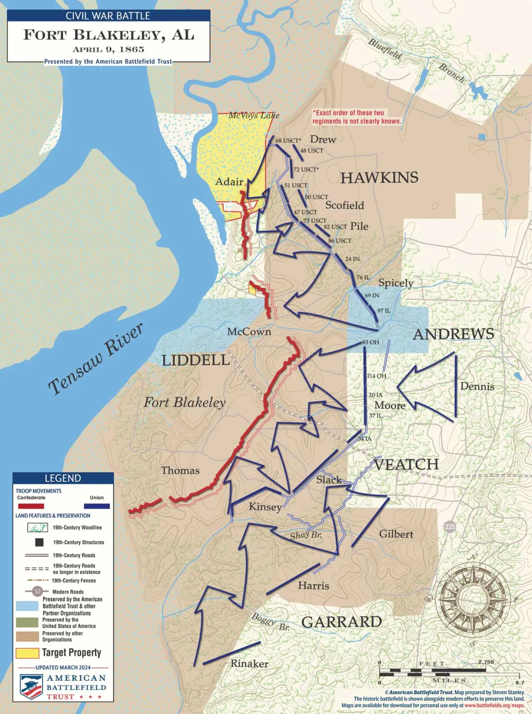

The two battles, mapped.
Field maps of the naval action at Mobile Bay and the final land assault at Fort Blakeley, prepared by the American Battlefield Trust. Study the troop movements here, then walk the ground itself in the interactive 3D map.

Battle of Mobile Bay
Farragut's eighteen ships run the minefield under Fort Morgan's guns, the Tecumseh sinks in under a minute, and the CSS Tennessee makes her lone, doomed charge against the whole Union fleet.
Read the full account ↗
Fort Blakeley
Sixteen thousand Union troops, nearly a third of them United States Colored Troops, charge nine Confederate redoubts across a three-mile front — the last major battle of the Civil War.
Read the full account ↗Maps © American Battlefield Trust, prepared by Steven Stanley · battlefields.org/maps · used here for personal, non-commercial reference.